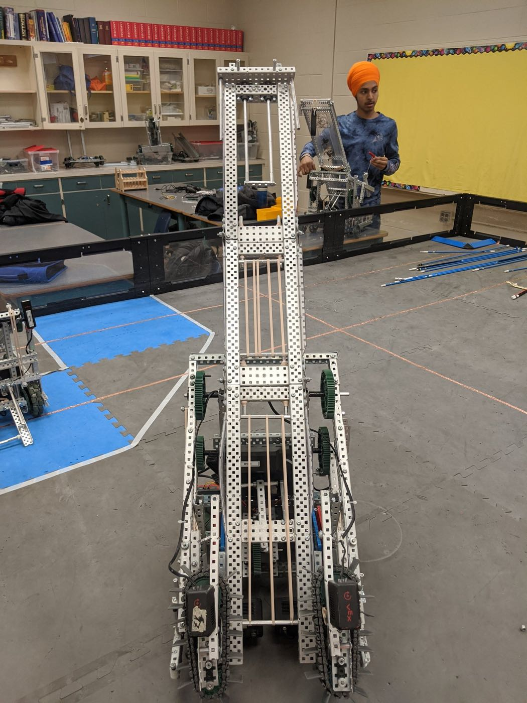
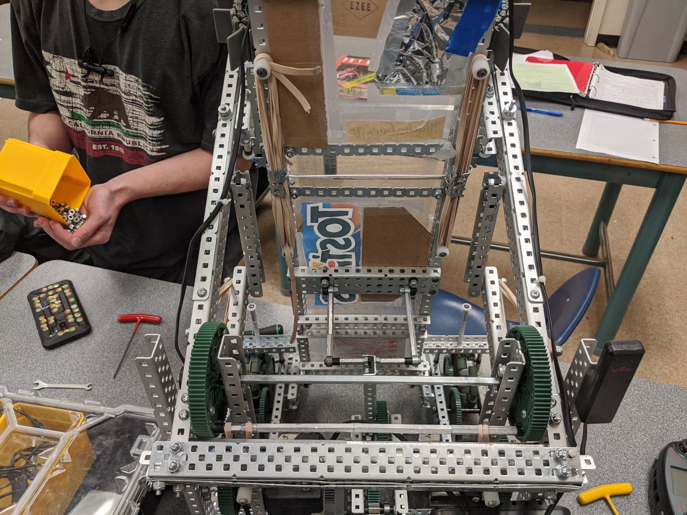
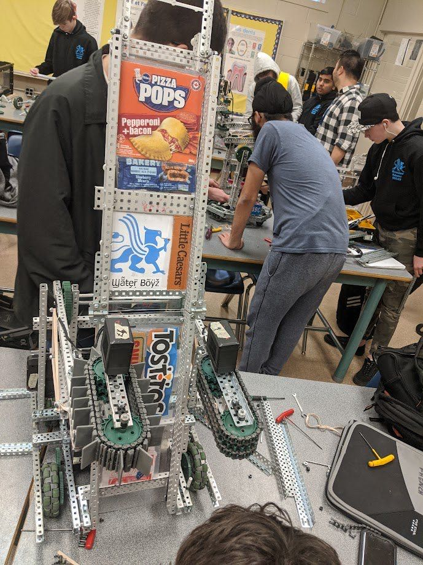
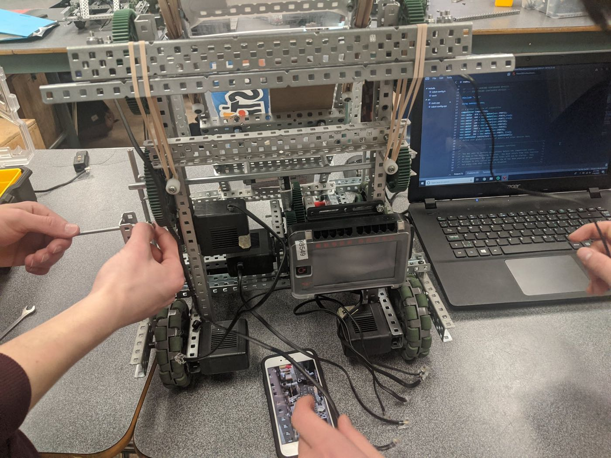
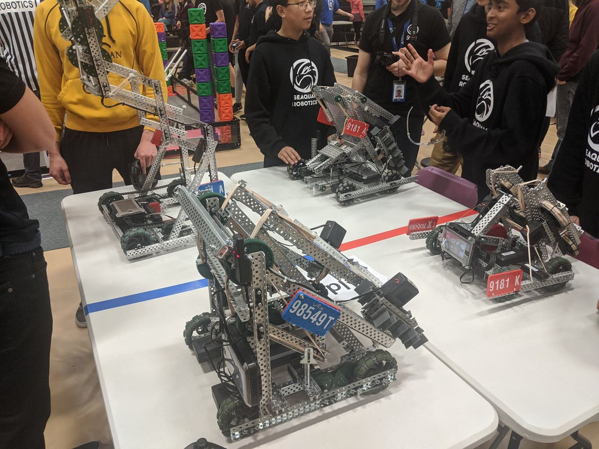
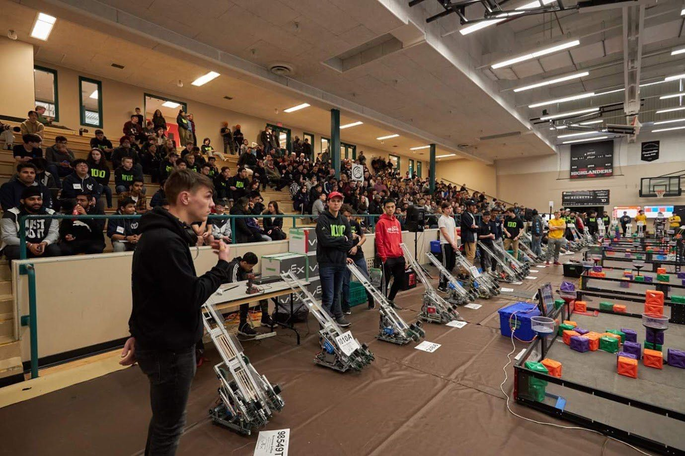
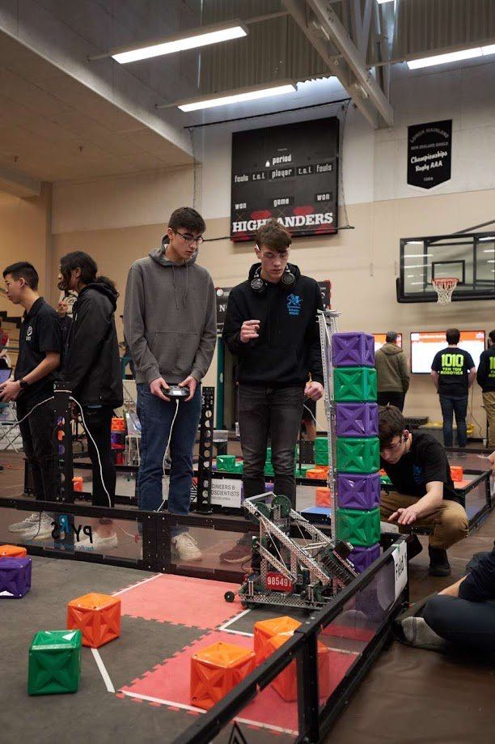
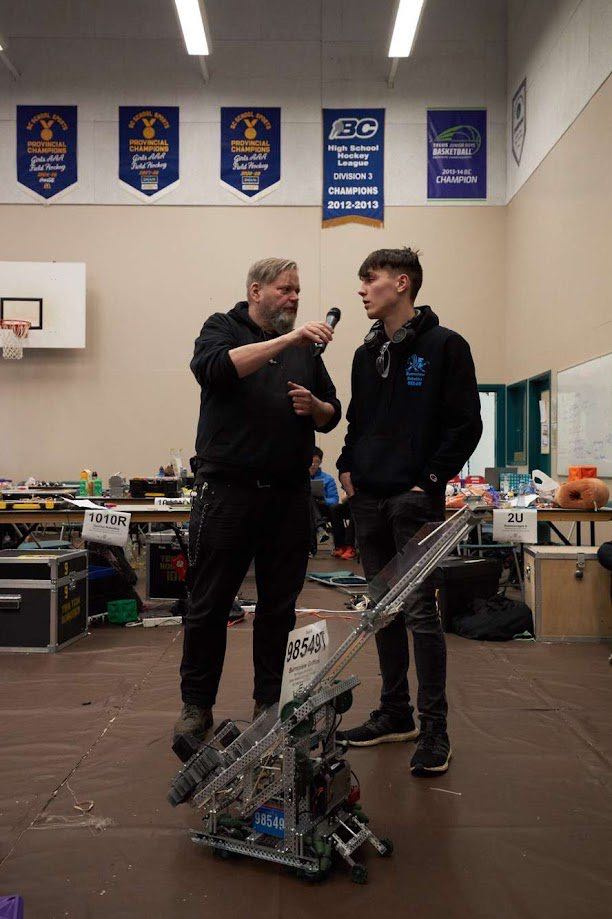

Overview
Although my high school was relatively small (~800 students), our VEX robotics program was well funded and had a great track record, with multiple past teams making it to the world championships. Being interested in electronics and engineering, I took full advantage of it and participated actively from grades 10-12, often staying 5-6 hours after school for weeks on end to work on my team's robot, especially during the competition season. This post highlights my team's work during the 2019-2020 season, our most successful year.
The 2019-2020 VEX game was called "Tower Takeover" and involved collecting and stacking multicolour cubes, as well as placing cubes in small elevated towers, which multiplied the score of a certain cube colour. Each match also started with a fully autonomous period in which the robots had a set amount of time to score points without any human input.
The robot
Our robot was designed as a "tray bot", the nickname for robots that pre-stack the cubes on an angled tray, then push the tray upright to set the whole stack down in one of the scoring zones at once. Throughout the year it went through many iterations, with each change making the robot more manoeuvrable and lighter, strengthening key mechanical and autonomous systems, and improving the overall design.
The robot was initially designed to stack 6 cubes, but through many iterations we developed an unfolding system that let it reliably stack 11-12. Tournament rules capped robots at 18 inches cubed at the start of a match, so our robot folded up to fit and then unfolded during the autonomous period. This meant systems like the intakes and tray had to fold by hand and clip in place, with elastics that flipped them out at the start of the match and custom locking mechanisms that held them securely for the rest of the game. (You can see this in the autonomous demo videos below, where the robot first unfolds itself.)



I was the primary programmer for our team and was also responsible for a third of the mechanical design and construction. Some of the best systems I designed were the intakes and intake locking mechanisms, and a reinforced version of our crossbar linkage, a crucial part of the design that raised and lowered the intake arms. I also wrote all of the driver control and autonomous code, with the autonomous routine going through many iterations before it could reliably score 3 cubes.
VEX tournaments are held throughout BC each year, and only about 40 of the roughly 1000 teams in the province qualify for provincials. Our team qualified by winning the BCIT "Last Chance" tournament, the final tournament held before provincials.


Provincials
At the Tower Takeover provincials, my team placed 1st out of all BC teams in the qualifying rounds. These pre-finals games establish each team's ranking and give higher-ranked teams an earlier pick of alliance partner before the playoffs and finals. This alone was a massive achievement for us, completely unexpected by the other teams, and we pulled it off in a rather clever way.
During the pre-tournament testing time, I noticed the field size and layout were slightly different from previous tournaments. I realized this because the complex autonomous routines of the leading teams, which had historically and reliably scored the most autonomous points, were regularly failing during testing.
Most of these teams also used light, nimble aluminium robots that could complete autonomous quickly and reliably, but weren't very powerful and scored fewer points during driver control, relying on their autonomous points for the overall win. With a smaller budget, my team only had access to steel parts for our frame, making our robot much heavier but also more powerful and robust than the others.



In that moment, we decided to scrap our complicated autonomous routine, and I coded a bulletproof simple one that didn't rely on the field layout at all. Thanks to these last-minute changes, we were one of the only teams scoring autonomous points in our first games, and with our weight and size we could effectively "bully" the other robots during driver control, winning the majority of our games on both driver control and autonomous points.
This put our team in first place in the qualifying rounds of the entire provincial tournament. Although the other teams eventually fixed their autonomous routines and we lost the qualifying game for Worlds, we were very proud of our performance. Most teams hadn't expected us to even qualify for provincials, and beating so many extremely well-funded teams in the qualifying rounds as one of, if not the biggest, underdogs was a massive achievement for all of us.